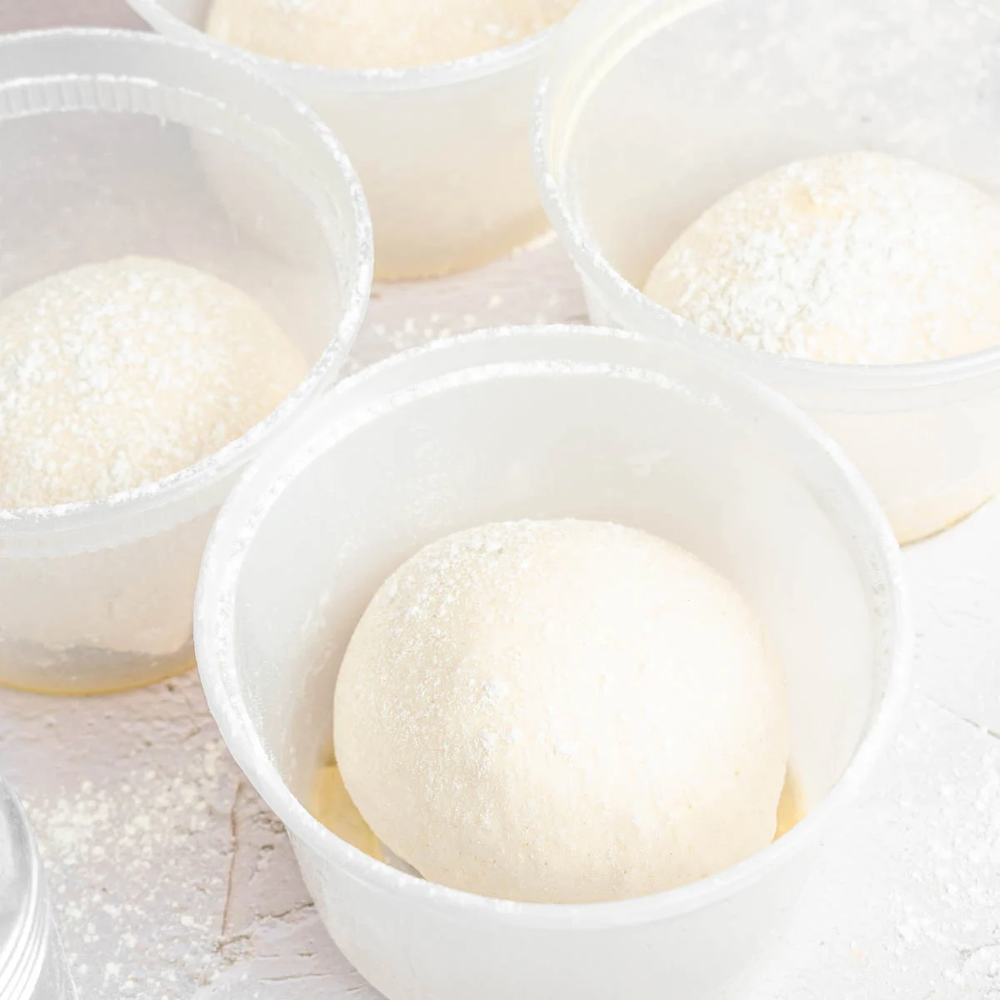
Pizza Dough

Pizza Sauce

Matar Paneer

Super Juice
Bourbon Cream

Cream Mushroom Soup

Chicken Liver Mousse
Lobster Roll
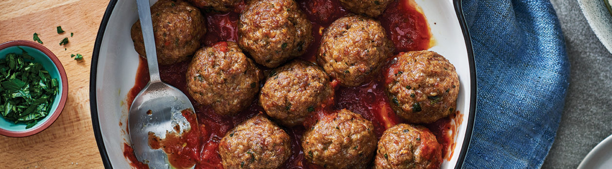
FRBoulettes de Viande
FR
Pâte à Crêpes
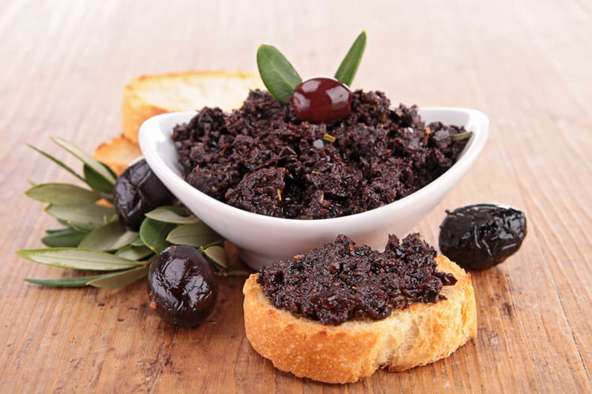
FRTapenade
Hot and Sour Soup
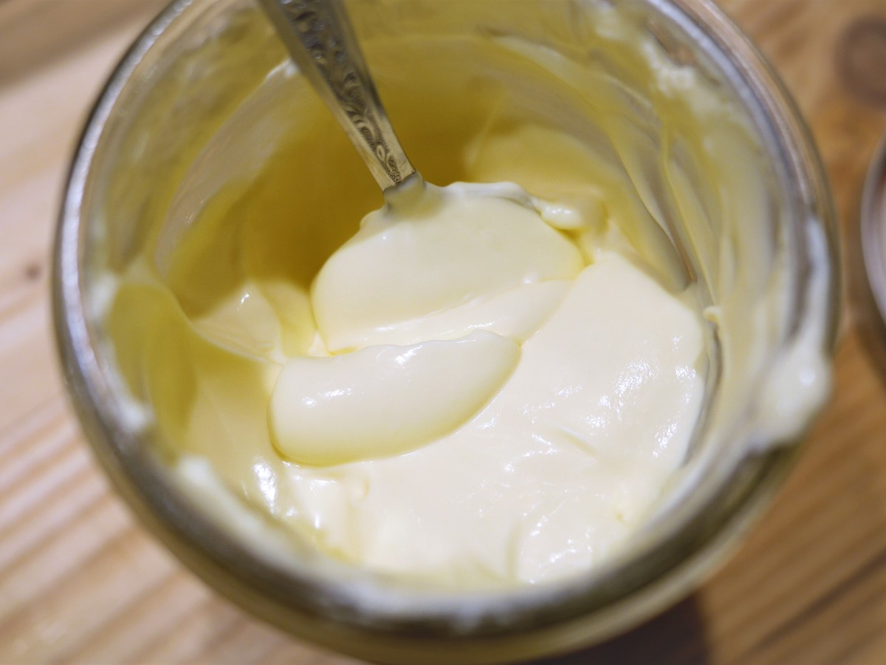
FRCrème Fraîche Maison
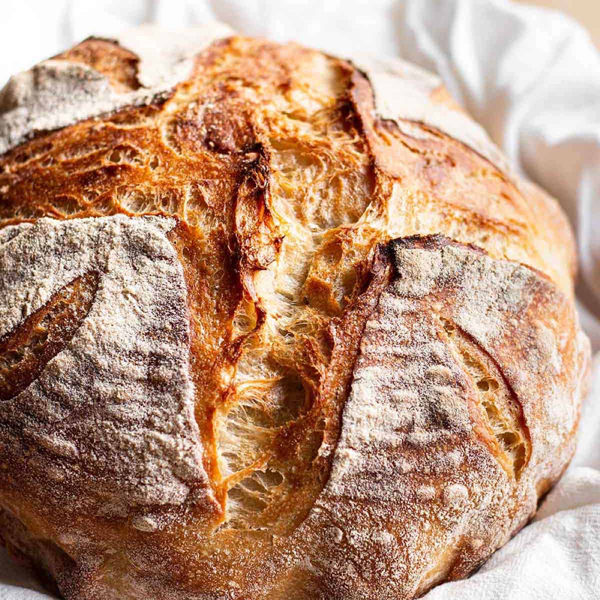
Overnight Sourdough Bread
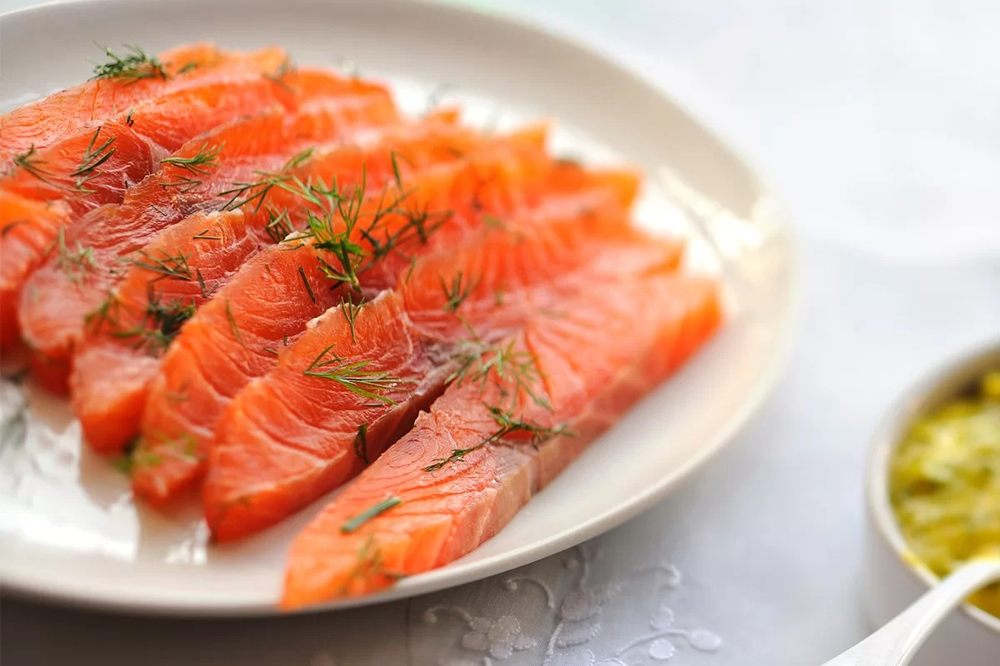
Gravlax Salmon
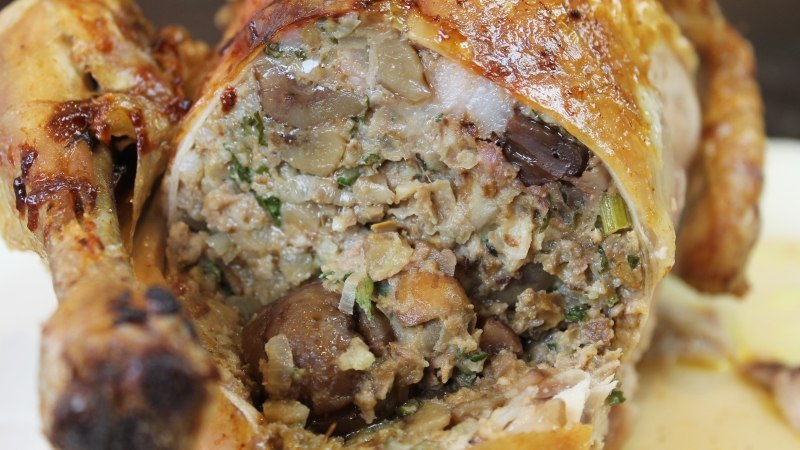
FRVolaille Farci
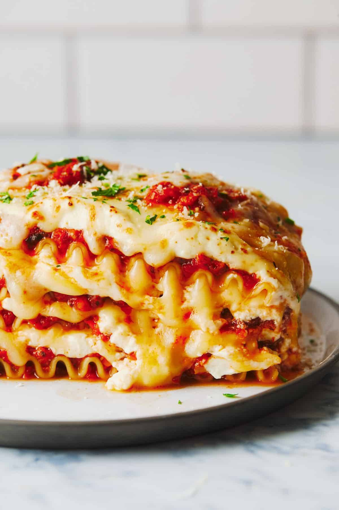
Vegetarian Lasagna
 FR
FR
Boeuf Bourguignon
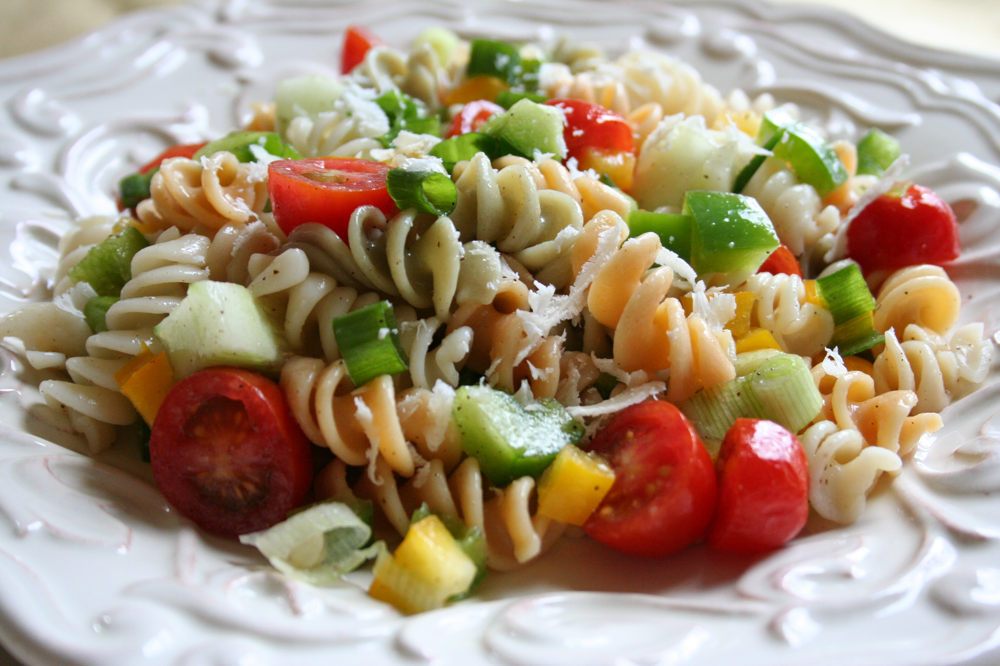
FRSalade de Pâtes Roquette & Boursin
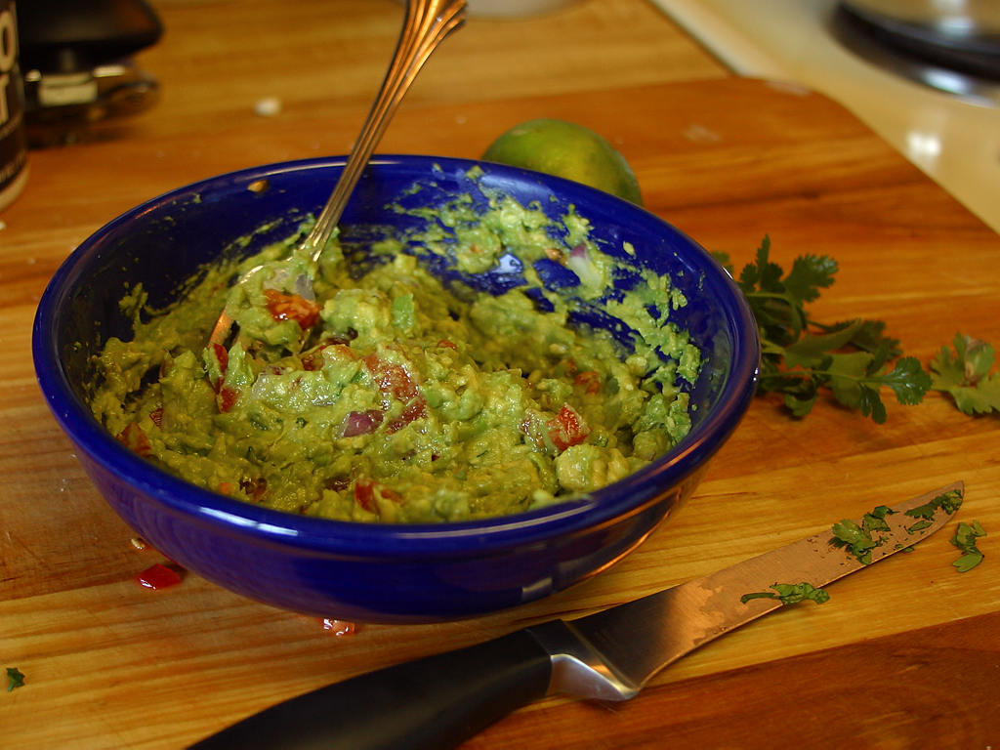
Guacamole
FR
Rillettes de Porc
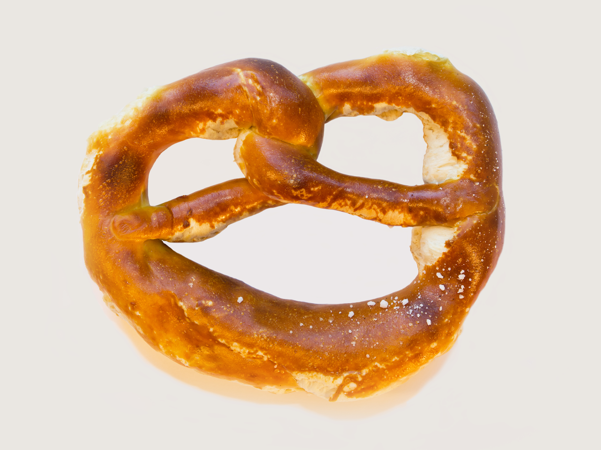
Soft Pretzels